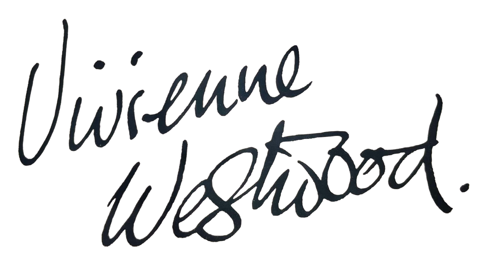
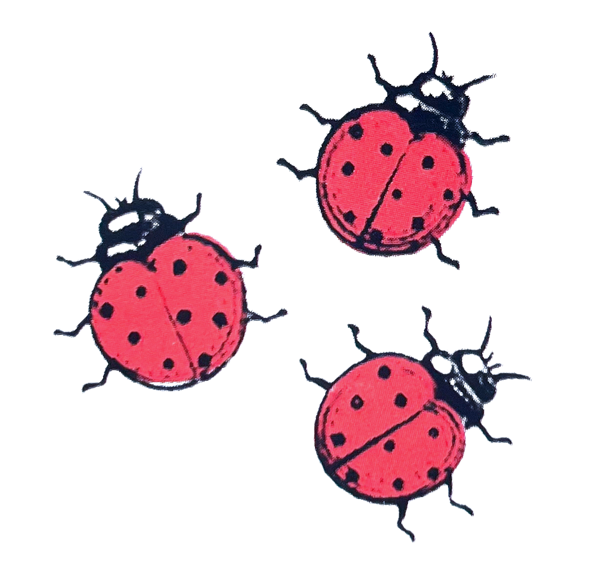
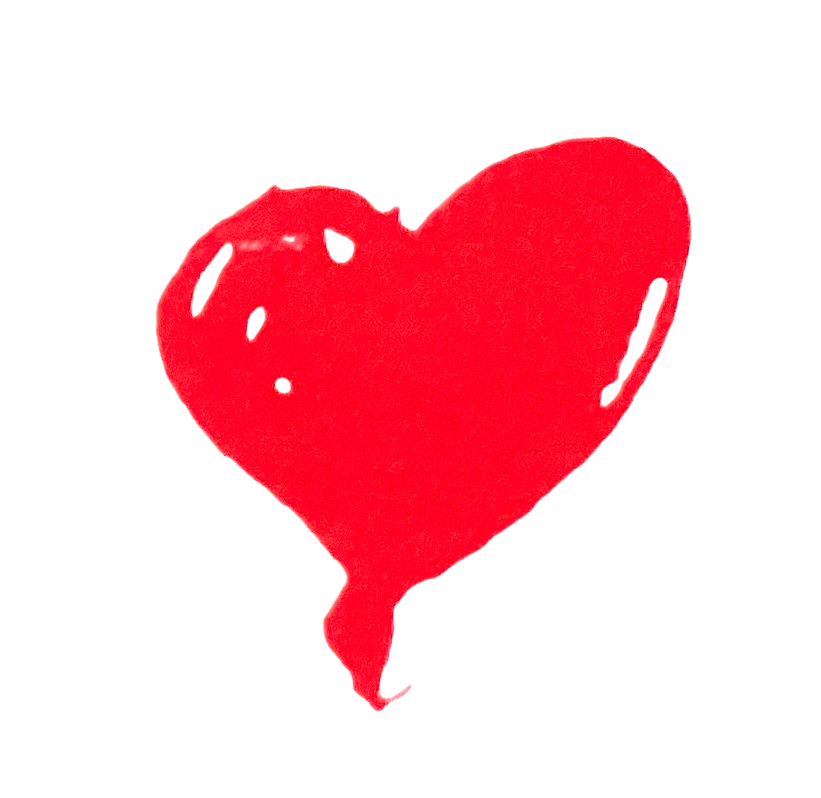

'The principle idea of Active Resistance is that you get out of life what you put in and that real experience of the world involves thinking' - Vivienne Westwood.
Active Resistance is a concept born from Vivienne Westwood's manifesto Active Resistance to Propaganda. The manifesto encourages the pursuit of culture and of art to provide an antidote to propaganda.
"It is not enough to follow world politics, see films and read the prize winning best seller. This is superficial, you need to go deep in order to understand who you are, what the world is and how things could be better. This involves culture which can only be acquired by self-education."
Every day for 100 days, one image representing the idea of Active Resistance was selected from worldwide submissions and shared online. The resulting installation gave light to 100 days of positive thought, active change, speaking up and being heard.
To all of the artists, photographers and global thinkers who shared their ideas for this project - thank you. These 100 ideas, more than just images, inspire thought and give hope to the possibility of collective change.
"No art, no true progress." - Vivienne Westwood
I make the great claim for my manifesto, that it penetrates to the root of the human predicament and offers the underlying solution. We have the choice to become more cultivated and therefore more human - or by muddling along as usual we shall remain the destructive and self-destroying animal, the victim of our own cleverness (To be or not to be).
Among the travellers who accompany Active Resistance are:
Our journey to find art will show that art gives culture and that culture is the antidote to propaganda.
AR
Dear Friends, We all love art and some of you claim to be artists. Without judges there is no art. She only exists when we know her. Does she exist?
The answer to this question is of vital importance because if art is alive the world will change. No art, no true progress.
We must find out; go in search of her. - But wait! Who is this with fire-cracking smouldering pigtails,
gold teeth and a brace of flintlocks in his belt? He is a pirate. - And what does his t-shirt say? - I love crap.
Pirate hands Active Resistance a Hawaiian garland of plastic flowers.
Pirate. Leave everything to me. I plunder for you. Stick with me and you might get a share of the bounty. My name is Progress.
AR. But you have stolen imagination. There is hardly anyone left now who believes in a better world. What is the future of unlimited profit in a finite world?
Pirate Progress. I like you artistic lot. But, trust me or not, I'll take you with me if I go down. We'll all burn together.
AR. He is not Progress. Sir Morgan Mammon stole the name and the Pirate works for him.
Sir Morgan Mammon. Music to my ears! More freedom, more consumption.
AR. Culture is the antidote to propaganda.
True Poet. The present is always the present moment of the past. We are the past. Art links past, present and future. Cut off from the past there is only habit.
Art Lover. We have lost touch with ourselves. Only the art lover stays in touch with ideas. I shall write a
Beautiful Slavegirl. To progress or advance in any way you must know what is your end or purpose. For example, money is not an end but a means to an end. And for this reason, I shall be set free.
I am so happy! I am the famous Rhodopis (Rosycheeks). My master made a fortune from selling my body but now my lover will pay a vast ransom, - even more than my future earnings could be. Oh. Liberty! I thought you were my end, but now, I see you are just a beginning. Can I be happy when the other slaves don't have a beginning? The only true End must be Happiness - but not just for one person.
I see now that progress can be an end without limit for there is always a better way of living. And though we may progress towards greater happiness, as an end it will always escape us, and a good thing too, because if we ever reach Paradise we'll all be dead.
AR. Aristotle took the practical view that the essence of any object lay in its end or purpose. If that could be discovered and realised then that constituted the true meaning or 'happiness' of that object - or person. I feel our end is to live in harmony with
Dryad of the Rainforest. How can humans be happy? For every tree they cut down a future child dies and there are more trees than children. Some people know these things but they plan to end the forest in one generation.
Child Slaveboy. A slave is not a person but a thing. A thing can be something like a car, or a hammer, as well as a slave. Soul-destroying, to put it in a nutshell. But my mother told me how to survive. I must try to understand the world and that way I don't lose my soul, I know who I am. When she said goodbye, she said, "Love Liberty, but forget the key, for the key turns only once. I love you."
True Poet. This brave child who is capable of experience will find himself in a different world in every decade of his life, seeing it with different eyes and his outlook on life continually renewed.
We are more privileged. As art lovers we have a more vast and intense experience. We see through the eyes of the artists who lived before us, all those very different views of the world throughout time, which we concentrate into our own existence: knowledge of life through an artist's knowledge of life.
Art Lover. Art cannot imitate life directly: it does it by representation as in a microcosm. The microcosm, which means small world, comes from primitive ritual. They made a man king for a year,
Art Lover. And this small world imitates the real world. This is something humans do - we transform the world into something small so that it is within our scope to understand. All our concepts are put together from abstractions - symbols to work things out - for example, words, numbers; we can understand a model because we get an overview, then we can project it back onto the real world.
Art makes us feel the world can make sense - the satisfaction of something understood. And this piece of art, this slice of life, is a whole thing - because it is separate from the world and therefore complete. (Like the microcosm we fence it off - in a book, in a frame, on a stage). We have power over it because it is whole.
It is the only time we're in complete control, otherwise the world passes us by. That's why we need art; crave it through all the generations.
AR. Action! Let's continue our search by asking Aristotle about the art of Greek tragedy. To the Lyceum!
Diogenes. I shit and wank in front of people in the street like a dog. I am the Cynic. The Great Alexander made a point of coming to see me and asked if he could do me a favour. Nobody's better than me. - I told him to step out of my light. I am famous because I've got the balls to do what I want.
AR. Come back children. You've gone too far.
Aristotle. For the beginnings of art in general, there appear to have been two causes, both rooted in human nature. Thus from childhood it is instinctive in human beings to imitate. And man differs from the other animals as the most imitative of all and getting his first lessons by Imitation. And by instinct also all human beings get pleasure in Imitation.
Aristotle. For tragedy is not an Imitation of men but of actions and of life. It is in action that happiness and unhappiness are found, and the end we aim at is a kind of activity, not a quality; in accordance with their characters men are of such and such a quality, in accordance with their actions they are fortunate or the reverse. Consequently, it is not for the purpose of presenting their characters that the agents engage in action, but rather it is for the sake of their actions that they take on the characters they have. Thus, what happens - that is, the plot - is the end for which a tragedy exists, and the end or purpose is the most important thing of all.
AR. Aristotle, it is essential to every art in any medium of expression that it is a whole. For only art can achieve perfection. Please tell us what you mean by 'the Whole' in the case of tragedy.
Aristotle. The events which are the parts of the plot must be so organized that if any of them is displaced or taken away, the whole will be shaken and put out of joint; for if the presence or absence of a thing makes no discernable difference, that thing is not part of the whole.
AR. One can begin to grasp something of the obsession people have had with the idea of the circle as a perfect form. A work of art then, is an Imitation reduced to its essentials, thereby forming a whole - as in a microcosm. Real life cannot give the complete picture. It is - a jumble of particulars in which events are engulfed in the flux of chaos. How can the artist see things as they really are when he, himself is part of the change? He needs a fixed fact to stand on.
AR. A hedgehog must understand the world from a hedgehog point of view, and we must understand it from a human point of view.
We do have a fixed fact to stand on: IMITATION.
We know that Imitation gives us art - but that is as a result of the main fact which is that our species is programmed to imitate. We are the world's best imitators and that is how we evolved into humans. We understand the world because we imitate it.
Without this key -- our human coding system, we could not hold anything in our memory or repeat our actions. Animals can do this to a limited degree. I'm thinking of a puppy I once met. I took a stick and it immediately understood my intention and was ready to run. And it brought the stick back. But animals do not have that continuous relationship with the world which gives us a great deal of control over our behaviour and our lives - even though we are free to act unwisely.
Adam Parker-Rhodes. Apes can't dance!
AR. The philosopher Adam Parker-Rhodes is racing against time as he pins down the theory of Imitation. He knows that an understanding of who we are bears upon what we shall do in the face of looming disaster from Climate Change.
Adam Parker-Rhodes. Following on from Aristotle and with a better understanding of the brain we now know that human beings have the unique ability to transform patterns from one sensory or muscular medium to another. It enables us to do things like dancing to music which is translating sound patterns into corresponding movements of the body.
AR. Dance is not necessarily art but, for example, ballet is - because it aims at perfection. We spend our lives looking for perfection - because we are looking for standards to imitate.
Every time we compare one thing with another we are imitating; we are trying to find a match between the data we hold in our mind and the new example - trying to find an ideal.(AR puts one hand on top of the other, palms facing)This is Imitation - matching one thing with another. We discriminate between good and bad, better and best. Discrimination is the mechanism of intelligence.
True Poet. The painter Whistler said that nature copies art. When the painter paints the perfect sunset we see it through his eyes, then look for it in real life.
AR. Not only through the eyes of the painter - we look at everything as if through other eyes. In order to judge, we want to know that other people feel the same. And don't we always look for that communication - someone else to share the sunset? We're looking for the perfect universal standard.
Art Lover. I'd like to tell you my idea of Imitation. It's when we jump outside ourselves. Leave our own preoccupations and ego behind and see things through other eyes, know what it feels like to be someone else. Empathy - kindness. I like to think that everything we know has its source in human kindness.
AR. Everything becomes clear when we consider what Aristotle says: art may imitate life not as it is but as it ought to be. He is talking about perfection and only the whole is perfect. He means ideal; universal because it is something we recognize as being true to life, even if we've never seen it before; each part must be more essentially itself, even if it is something horrid like envy; more typical. Aristotle says that the best characters in a play are 'someone like ourselves' - people we can relate to.
For example, Chaucer's characters are as alive to us today as when he first invented them. Timeless - outside of time. They speak to us of human nature. Each detail illuminates the type and is what we call the universal in the particular - 'someone like ourselves'
The universal in the particular is familiar to all of us - that flash of insight, that detail which suddenly reveals the whole thing, and we see things complete and as they are - and as we never saw them before. This is direct knowledge.
Insight happens because we suddenly exteriorize ourselves - it's like 'I am there' and yes, if our object is
a fellow human being we can imagine what it feels like to be them. We can put ourselves in their place.
Insight is often just a thrilling conviction that certain things are connected; we hold them in our mind waiting for the day of perception. (Turning to the True Poet) You are a poet and an alchemist. How does the artist create
- arrive at perception?
True Poet.
The originality of art lies in bringing ordinary feelings to our attention.
Not everything that enters our orbit makes an impression; only the things we notice. Our senses do not register things unless we attach a feeling to them, so feelings are our prime contact with reality, more primitive than language or reason. Indeed the poet struggles to express feelings which are beyond words.
The artist's mind is in fact a receptacle for storing up numberless feelings, phrases, images which remain there until a new idea 'comes' in. All the particles which can unite to form a new compound are then present to-gether. This is alchemy.
Fusion into the whole takes place under an intense creative pressure from parts which are felt together.Emotion has its life in the work and is separate from the real-life passions of the man who creates. He must rid himself of habit.
AR. So we arrive at perception by imitating. Sometimes quickly, as when we imitate directly.
AR. And we can imitate through empathy, using our imagination to get outside ourselves. (And turning to the True Poet) But you, the artist, are a professional imitator. These human feelings are the very stuff of art. You are the one who manages to re-present them, brings them to light - by modifying and distorting everything in relation to everything else.
Art Agent. You seem to be talking about old art. As if a work of art had a life of its own. People want the artist and they want him to give them something different.
Art Lover Oh yes,'the artist'! Me, me, me. No culture - and trying to be extreme. The trouble with 'something different' is we've seen it about 17 times already.
Artists Agent. Superb intellectual irony - Right on!
Art Agent. He's right. The art-hole is shockingly 'something different', the ultimate aesthetic of all modern art. A last the past is blast! Value is once and for all transferred from the work of art to the mind of the punter.
Art Agent. Fantasy.
AR. Non-stop distraction makes people gullible.
Art Agent. No problem. All genuine artists have an agent.
Art Agent. Yes, authentication from the agent. Holes will be very popular. All those journeys into private fantasy. Like Lourdes without the crowds. Wait a minute, the art-hole concept is endlessly capable of manipulation; we could hire a stadium, the punter could pay for a massive event. The art-hole is the last word.
(a moment of doubt) But not the end of 'something different'. Anybody can be an artist, my door is always open.
I just met
(turns to
That's what being true to yourself means. Everybody knows this. When they don't, it's because they don't think it's important. They prefer fantasy.
And being true to yourself,
True Poet. (to
AR. I know a great couturier. He said to me, "I have prepared a dress shaped like a heart which I plan to make in black taffeta, it will hold the shape well. Now I ask myself, how would it be in black poplin? More poor, more nothing - less. In which one would a woman appear more beautiful? Until I know the answer, this will destroy me. And yes, I feel silly in front of the terrible problems others face in this world."
What does this tell us if we rely on our feelings, our feelings about things, not our personal ones? Put yourself in his place. Is he genuine or too extreme? Does he represent human nature?
General Assent. I believe in him, he's true to life - well, he is alive. Is he self deceiving?
Art Lover. Well, next day it might not be so important, he might have other worries which also destroy him. It's very difficult to empathize. The word 'destroy' is too extreme. I can't bridge the gap.
Dryad of the Rainforest. The acorn is happy when he becomes a tree.
True Poet. I think there's something here which could be worked up into a play. If it were me, I would place the couturier in the context which he, himself, has introduced - world problems, the suffering of others. This begins the alchemical process of collecting and selecting the significant factors; being alive to metaphor and sym-bol. I would begin the action by having him make both dresses. For as Aristotle says, "It is in action that happiness or unhappiness lies." The same woman would wear each different dress. I would discover the behaviour of the couturier by making it fit the unfurling action; set him free to find his own purpose. There are no rules as to what is true to human nature, only the discipline of our feelings, judging through trial and error. Through art we can reach what is universal, penetrate to the essential sickness or strength of the human soul.
AR. Without judges there is no art, which is the same as saying: we get the art we deserve.
Art Lover. Very good - as an art lover, my passion keeps art alive. Therefore art exists! Through our
AR. But, the artist has no responsibility to us. He must tell the truth. This is the meaning of the
Whistler. Art happens - no hovel is safe from it, no Prince may depend upon it, the vastest intelligence
cannot bring it about and puny efforts to make it popular end in quaint comedy, and coarse farce.
This is as it should be. Why after centuries of freedom from it and indifference to it should the people have
Art thrust upon them? She has no desire to teach, no purpose to better others.
Art seeks the Artist alone. Where he is, there she appears, and remains with him - loving and fruitful...
And when he dies she sadly takes her flight.
With the man, then, and not with the multitude are her intimacies; and in the book of her life the names
inscribed are few - scant, indeed, the list of those who have helped to write her story of love and beauty.
AR. We also have our part in all true art! Remember, Imitation makes the whole world kin.
Whistler. True indeed. But let not the unwary jauntily suppose that Shakespeare herewith hands him his passport to Paradise, and thus permits him speech among the chosen. Rather learn that in this very word, Imitation, he is condemned to remain without - to continue with the common.
AR. You mean that what is popular is also vulgar. We know the artist is a freak of nature yet he sees through human eyes. We small band of art lovers expect no favours from art. But from you, the artist, we hope to see the world through your eyes — in this way we serve art. It's down to the art lover to engage in art.
Art Lover. Mr. Whistler, I fear for these young people! In your field, painting - which has had such an impact on our lives - there is nothing happening nowadays. What are they to do? All their friends run around trying to catch the latest thing. When you're young you like to think something is happening.
Whistler. If Art be rare today, it was seldom heretofore. It is false, this teaching of decay. The master stands in no relation to the moment at which he occurs - a monument of isolation - hinting at sadness - having no part in the progress of his fellow men.
He is also no more the product of civilization than is the scientific wisdom of a period. The assertion itself requires the man to make it. The truth was from the beginning.
Art Lover. Progress in art — Picasso! What would he not have given to capture the 'mana' of those bulls from the cave paintings of
True Poet. One truth is not more true than another.
Art Lover. But time is running out for the art lovers. I'm talking about the planet. It's all very well to say that we can become more human through art - human enough to save the planet!? Meanwhile, all we can do is believe in
Hitler. All effective propaganda has to limit itself only to a very few points and to use them like slogans.
AR.
On the way we could look in at a Conference on Culture which is attended by those very same art lovers who from the beginning had no interest in our journey. Here it is in
Opening Speaker. (French professor of anthropology) And Man came out of
AR. The talk lasts ¾ hour. He's scared of seeming Eurocentric ...and the good thing is he ended up in
Philosopher. We need more festivals to promote cultural exchange between the world's traditional and popular arts and crafts.
Top Cultural Advisor. We need a common vision of the importance of television and cinema for the cohesion of society.
Choreographer. Dance is the only international language. It should be at the top of every agenda.
Rapper. I need the state to sponsor my music. The internet only helps established artists.
Composer. Young people should know that culture is not entertainment.
Director of state art gallery. We have not once mentioned American culture!
AR. As we began by saying, artists and intellectuals have abdicated their responsibility. They wish to be popular instead of truthful to their vision of the world. We have no avant garde. Art has never been popular; it is original and it takes time for people to see it. But where there is an avant garde, others will follow: this gives culture. There has to be a hierarchy of values. They've swapped culture for the cult of the individual.
When you boil it down, people think that culture is being nice to each other. Being nice is not enough. Life has to have meaning: discrimination in pursuit of truth - my way is through art. In the conference they realized they had a problem, when you like everything you end up with some sort of global soup -
Art Lover. And
AR. Children, You are expensive - crap is not good enough for you. Time is your luxury. You like to be alone because you like to think. As art lovers and readers you will converse with the highest forms of intelligence.
You will form your own opinions and your ideas will be the avant garde. Ideas will give you power and you will fire the imagination of your friends.
You see through propaganda. Therefore, engage in politics. It is time for you to receive your badges from the noble warrior, Leonard Peltier.
Leonard Peltier. (It is the spirit of Leonard which now speaks)Art is an imaginative illusion which captures the imagination. State your vows.
Indians have not made this mistake, they see the world in its entirety. Our first duty is to love our mother, Earth. Indians know the importance of living in harmony with creation. Men - not gods. The Greeks called human arrogance
Voice of
Leonard Peltier. Progress lies in the centre of the mandala. Step forward. (In his hand he holds a small convex mirror from which the light is coming.) This is the mirror of true progress.
Dryad of the Rainforest. I must stay with my trees.
The most important thing about the manifesto is that it is a practice. If you follow it your life will change. In the pursuit of culture you will start to think If you change your life, you change the world.
Get a 
life
Art Lovers Unite! 
Stand up and be counted. March and be act
ive. It's your right, don't lose it!
March
1
Credits page